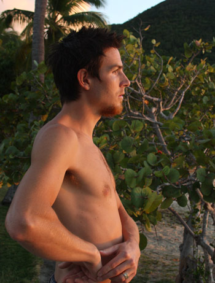

|
e-Grips Routesetting Interview: Peter Kamitses 
eG: Peter, you’re a bit of a New England legend, having climbed hard routes all over the crags in the Northeast, but some people may not know you’re also a longtime routesetter – what got you into setting? PK: I started climbing on the cliffs of New England when I was 18 and a couple of years later the first climbing gym in Vt opened up just outside of Burlington. Indoor climbing was new to me and I was amazed at the volume of climbing I could accomplish in such a short time. Right away the owners let me start setting and I was hooked on the creative challenge that setting provides. eG: Tell us about the gym you set at in Vermont – Petra Cliffs – how long have you been involved setting there? PK: After the Burlington Rock Gym closed we went a couple of years with no indoor facility until Petra Cliffs opened in 2000 and I have been setting there ever since. eG: Do you have a crew or do you do most of the work yourself? Play any other roles in the gym? PK: I end up doing the majority of the work myself but over the years there have been many great people who have come and gone in the northern Vt community who have given a lot to the route setting at Petra Cliffs. Currently there are a good group of barter setters who help out once a week or so. As for other roles in the gym, I used to guide a bit, coach the junior team and do private lessons but now only have time for the setting. eG: Are there unique characteristics about the gym you can tell us about? Whether the climbing terrain, the layout, the climbing community..? PK: The highlights of Petra Cliffs terrain are the 50 degree lead cave capped by a 12 foot horizontal roof and the bouldering cave upstairs which has a tone of interesting angles and features. The climbing community and members of our gym are really our biggest asset. There is a great deal of energy and psych to draw from that is really motivating through our long winters. eG: So, when it comes to setting, being as experienced as you are outdoors, do you take inspiration from real rock? PK: Definitely, I am a little embarrassed to admit how much time I spend thinking about specific movements and sequences on routes I’ve done or projects that I’m working on. I feel super fortunate to have been able to do as much traveling and climbing as I’ve done and to then be able to draw from that in my work. eG: What about grades… it’s hard enough finding consistency with grading on real rock, what’s your take on how to think about grades in the gym and when setting? PK: Grades in the gym are only a suggestion and as long as the routes with higher grades are harder than the routes with lower grades customers should be happy. In general I think making gym routes a bit stout or at least really solid for the grade is a good idea so that when people go outside to more challenging terrain they have the fitness to meet those challenges at similar grades. eG: If someone who climbs at Petracliffs regularly were to describe your style of routes, what would they say? PK: Probably a bit longer (as in more moves) user friendly with nice flow and generally getting harder towards the top. Also more flat and positive holds versus slopers so that it isn’t as big a deal when they get all greasy caked up with chalk from all the traffic. eG: Setting in a gym commercially, it can be a real challenge to please the diverse membership – if you could describe one route you think would be most popular in the gym, what would it be in terms of grade? Would there be specific movement styles? A crux? PK: I’d have to say that a classic 5.10 would get the most traffic as it will be the beginners’ project and the more experienced climbers warm-up. I like the ultra classic gym route to have flawless flow with increasing difficulty and between 25 and 50 moves long. No huge rests to mess up the pump. It should have a bit of everything as far as hold type and orientation though I sometimes like to group hold types in a certain section of the climb; like a series of 5 pocket moves into some angling layback edges or whatever. Positive clipping holds to help people relax without fear of blowing clips. For the most part the sequences should be moderately easy to read with a few distinctive technical sections that require more thought. Most importantly they should be fun. Awkward, jerky, “trad” moves are not fun. eG: You’re in a gym that’s been around for a while, probably has a lot of holds old and new… what are some of your favorite holds out there? Petracliffs is also one of the many gyms on e-Grips First Dibs program, and favorite eG sets? PK: Yeah we have been weeding out the oldest, polished resin holds as best we can and replacing them with new urethane sets from a variety of companies. e-Grips and So Ill are my favorite companies and I’m not just saying that cause this is going on your website. e-Grips were the first company out there to have the durability and texture which made them my favorite regardless of shape when I first used them. There is nothing worse than a sweet new hold that has decent texture when new but gets totally polished up the first time its put on a high traffic route where it gets stepped on hundreds of times a day for a couple of months straight. Or worse gets broken when accidently dropped on the concrete. Case in point the first set of e-Grips we got years ago still have great texture while some holds we’ve had less than a year are polished already. As far as favorite e-Grips sets….I love em all but the old school Solar System set and Ian’s Tribal are some of my favorites as well as the newer Side Dishes and Little Wings. eG: I asked this question to another setting friend recently – I like it so I’m going to ask it again… If you could be anywhere in the world developing a new route, where would it be… what would the route look or climb like? PK: I’d say it would have to be here in my backyard in Vermont or the Adirondacks. I think developing new routes in your home region is one of the best things you can give to your local climbing community. Having somewhat limited time to climb these days with my two sons and my wife’s new business (here’s the plug www.urbanmoonshine.com) I would want it to be super rewarding. For me that means a beautiful overhanging intermittent crack and face route on bullet granite with decent gear, spaced out and spicy, but safe enough, with moves I can conceive of but not quite do without lots of work. eG: Ok, back to the outdoor world – what are your aspirations for 2009 – 2010, do you have any serious trips planned or projects you’re excited about? PK: Probably do a short sport climbing trip to Quebec next month and a longer trip to the southeast in the late fall. I have two amazing projects here near home, one is half gear/half bolts and is definitely possible, just this spring I finally did every move. The other is an all gear route following an arcing seam up a gently overhanging face and I’m not so sure if I can do it, half of the moves I could conceive of but not do….but I am psyched none the less. eG: Thanks Peter, have a great summer! |